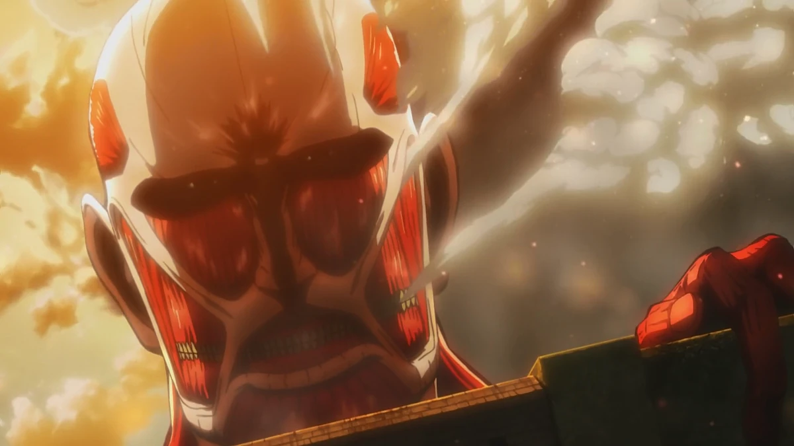
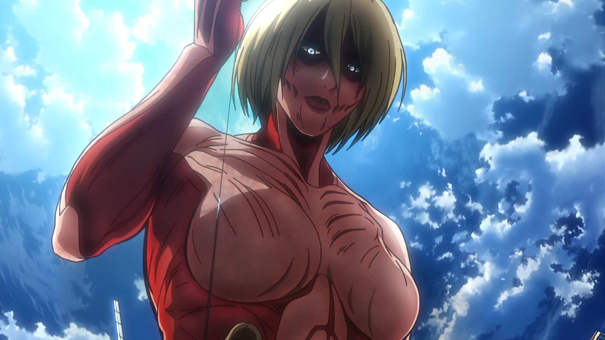
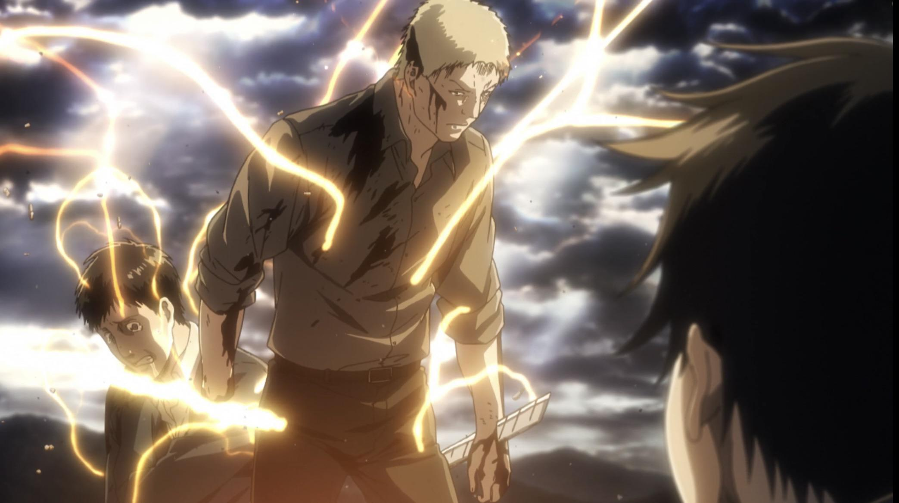
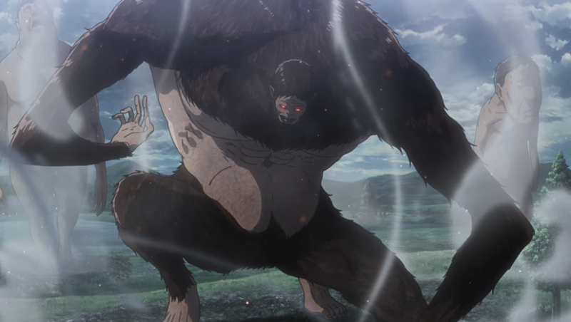

瑪利亞之牆最南端「希干希納區」的甕城大門遭超大型巨人踢破，隨後盔甲巨人撞破內門，大量巨人湧入牆內。

瑪利亞之牆淪陷後的第五年，目的為誘出潛伏在軍隊中的智慧巨人，並測試艾連的能力與捕捉手段。

萊納與貝爾托特暴露盔甲巨人與超大型巨人身分，並在戰鬥中擄走艾連，艾爾文團長率領調查兵團火速追擊，試圖在兩人帶著艾倫撤回瑪利亞之牆外前將其奪回。

調查兵團為了封堵希干希納區城牆破洞、前往艾連家地下室揭開世界真相而發起的關鍵戰役，由於846年的第一次奪還作戰以慘敗告終、損失約25萬人口，此次作戰成為決定帕拉迪島命運的背水一戰。